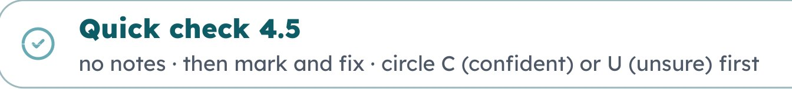
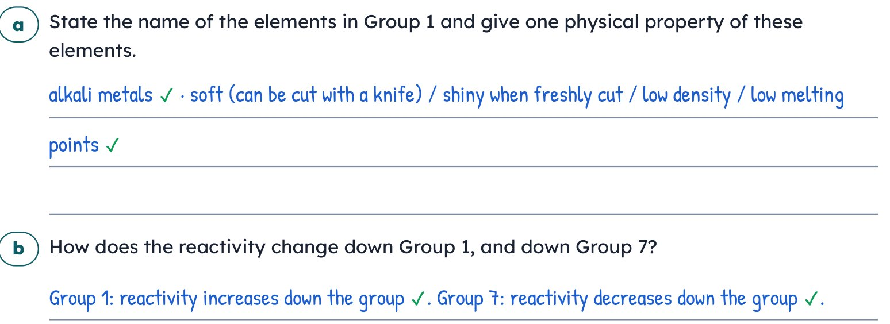
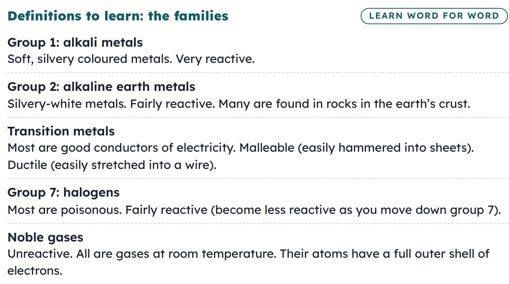
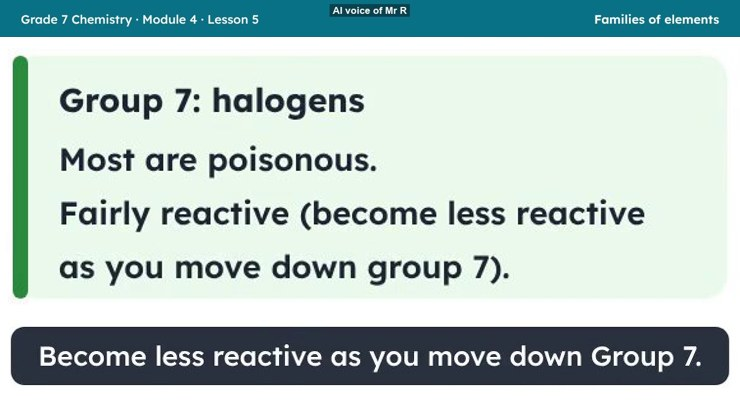
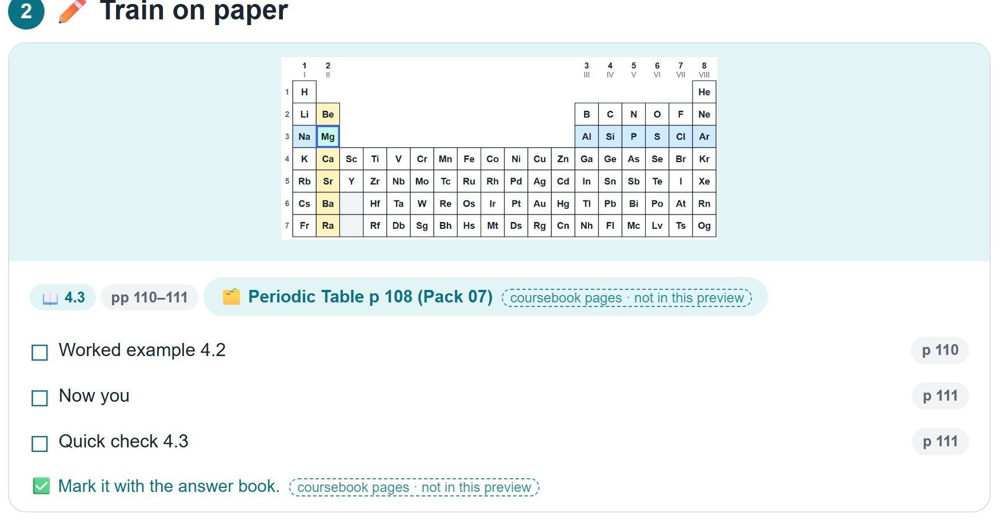
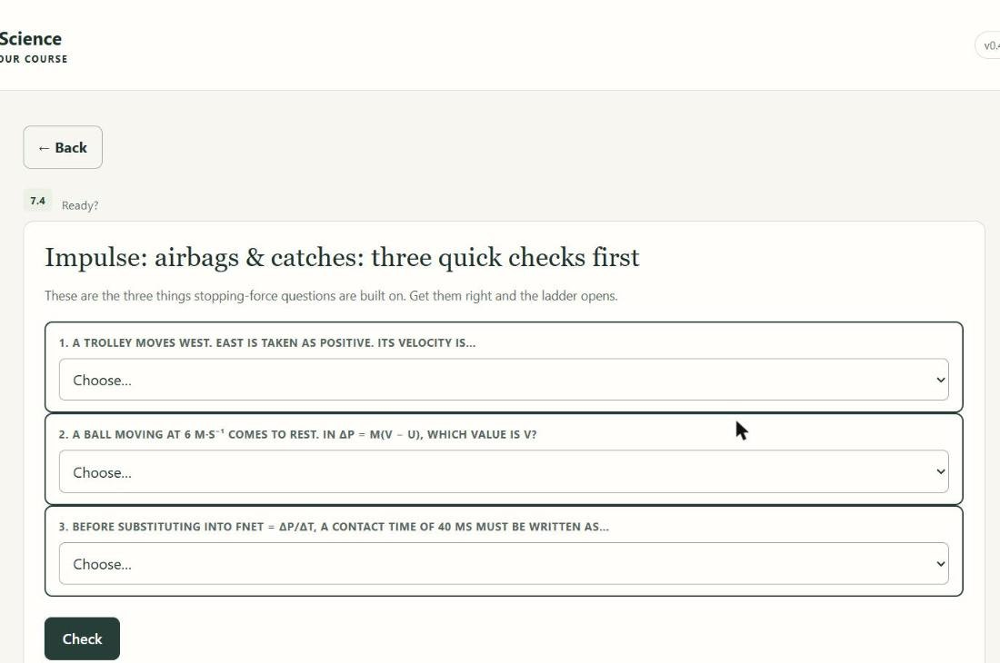
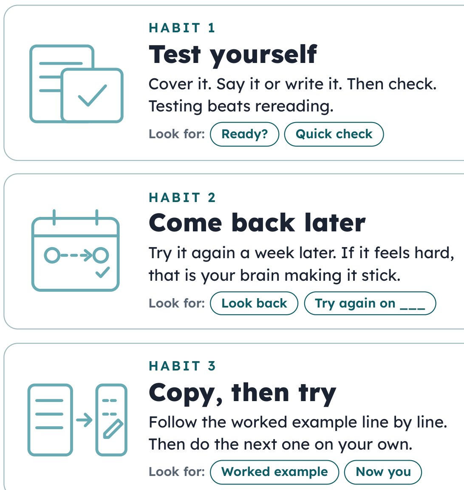

Expertise is what makes AI useful.
Struggle is what makes learning stick.
The expertise it names is knowing where learning actually happens: in the learner's own retrieving, writing and struggling, not in how beautifully we explain things.
A talk for teachers · Noel Robert, Physical Sciences teacher
Press → or Space to move on. Press S for speaker notes.
Which one is learning?
A beautiful animation
A blank page and a pen
We've been here before
Smartboards came first. Learning science got lost.
Round one
Smartboards
Round two
AI
Fluency fools us
Beautiful isn't the same as learned.
Current is the same everywhere in a series circuit.Measure it anywhere: same reading.
Add a second lamp in series and both glow dimmer.More resistance, less current.
Voltage is shared between the lamps.Two identical lamps: half each.
In parallel, each lamp gets the full voltage.So each glows brightly.
An ammeter goes in series. A voltmeter goes in parallel.Across the part you measure.
Write down everything you remember.On paper. No peeking. One minute.
Pens ready.
Press Start, then just watch.
- 1 · Watch for 30 seconds
- 2 · Look away and write
- 3 · Check: how much stuck?
30
How memory forms
Memory forms when learners retrieve, write and struggle.
Retrieve
Close the book. Pull it back out.
Write
In their own hand, step by step.
Struggle a little
Hard enough to make them think.
Hard is the point
Discomfort is the signal, not the problem.
Watch, reread
Recall, write, struggle
If it feels easy, it probably isn't sticking.
Bar heights show the direction only, not a measurement.
Testing
Testing is how you learn, not just how we measure.
0%
My check-ins count for nothing. On purpose.


5 questions drawn from about 15 · a C/U confidence circle on every Quick check
Meet me halfway
Bring your own attempt first. Then I'll help.
A learnerSir, can we have a clinic? Can you explain it again?
MeYes. Show me your attempt first.
The attempt is where the learning is.
How I build
Built backwards from what earns marks.




Every word traces back to the exam. Nothing generic.
How I build
Every screen ends in a pen.

Show me what you tried first.
I got 12, but I'm not sure.
Your first step is right. Look again at step 2.

Who does what
My expertise does the sequencing. AI does the labour.
Me
- What comes first
- When the help fades
- When it comes back
- What earns the mark
AI
- Typing the pages
- Drawing the diagrams
- Voicing the videos
- Checking the work
Why it matters
Marks now, learners for life.
Marks now
They open doors. I'll never apologise for chasing them.
For life
How they learned it: test yourself, come back later, mix it up, check against the memo.

The reward
Enjoy the click.
The moment it makes sense, on their own.
Not only the mark.
Your Monday test
For any tool, tick four boxes.
Expertise is what makes AI useful.
Struggle is what makes learning stick.
The expertise it names is knowing where learning actually happens: in the learner's own retrieving, writing and struggling, not in how beautifully we explain things.